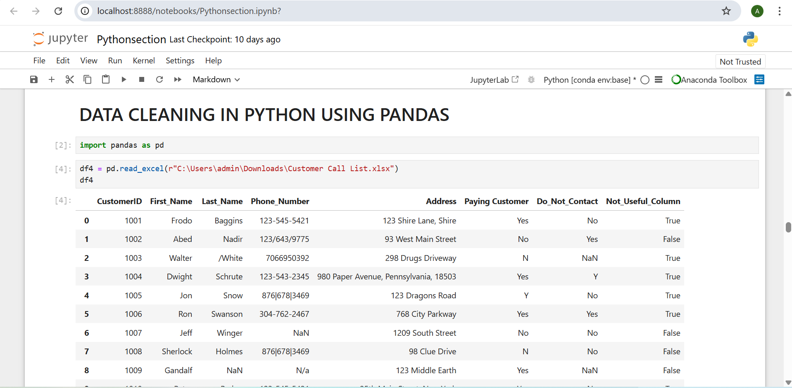
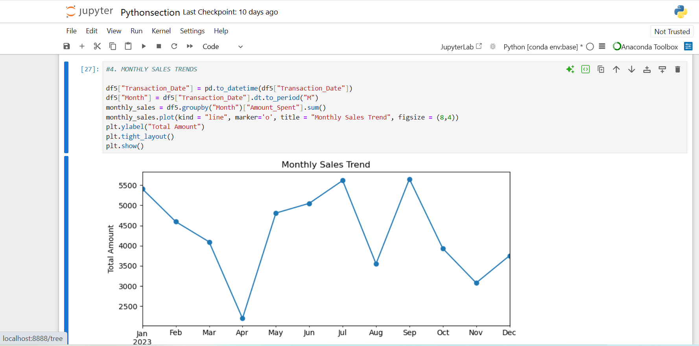
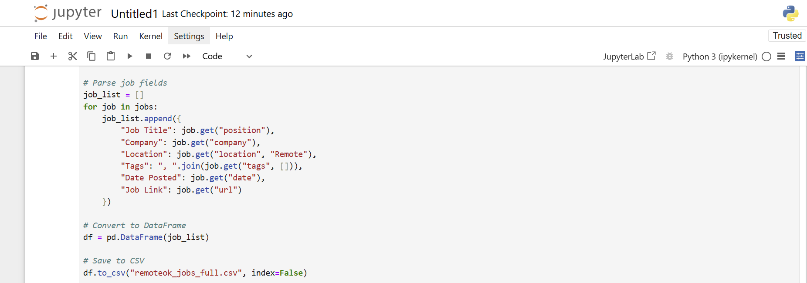
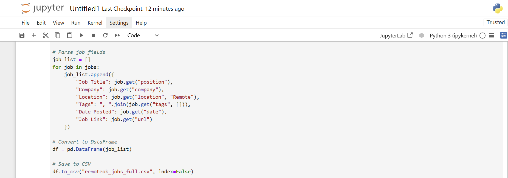

Featured Python Projects

Customer Call List – Data Cleaning with Pandas
Cleaned and standardized messy customer data using Python to enable accurate downstream analysis and improve contact handling.
View Project

Sales Visualization Project – Interactive Trend Analysis with Matplotlib
Visualized transaction trends across products, cities, and payment methods to uncover actionable business insights using Python libraries.
View Project
Web Scraping Remote Jobs – Real-Time Listings Extraction with Python
Automated job data extraction from RemoteOK API for streamlined access to up-to-date remote opportunities
View Project 
